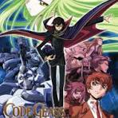

Code Geass
Rating: ★★★★★
- I really like this anime due to the amount of plot twists it contains and the action it has in it.
- My favorite character in the anime is Lelouch vi Britannia.
- Genre - mechs, political drama, psychological thriller, action, sci-fi, and supernatural fantasy